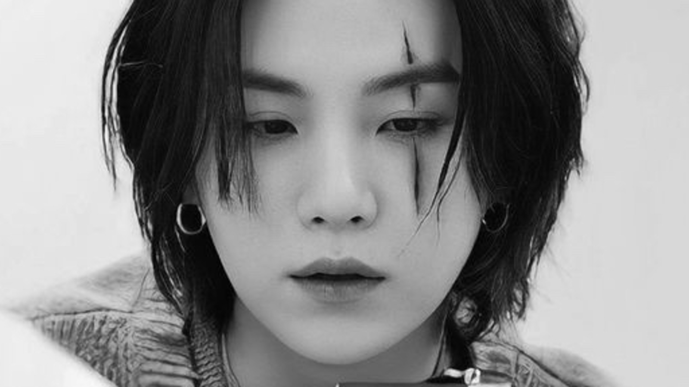
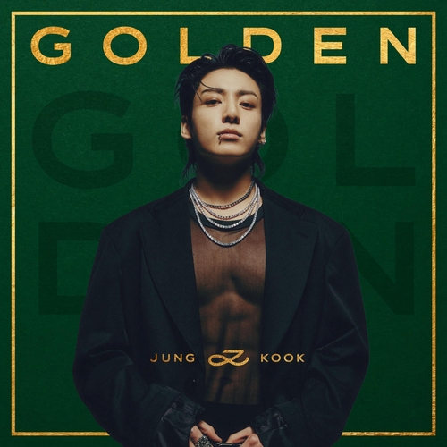

| BANGTAN SONYEONDAN |
Música y felicidad |
Imagen |
 |
|
|
DYNAMITE BTS |
INTEGRANTES |
NOTICIAS |
 |
Jung Ho-Seok (en hangul, 정호석; en hanja, 鄭號錫; Gwangju, 18 de febrero de 1994); más conocido por su nombre artístico J-Hope es un rapero, compositor, cantante, bailarín, coreógrafo, modelo y productor surcoreano. En 2013 debutó como miembro del grupo BTS bajo la compañía Big Hit Music. |
ir a pagina de noticias de jhope |
|
Park Ji-min (en hangul, 박지민; en hanja, 朴智旻; Busan, 13 de octubre de 1995), más conocido como Jimin (en hangul, 지민), es un cantante y bailarín surcoreano. En 2013 debutó como integrante del grupo BTS bajo la compañía Big Hit Entertainment. |
ir a pagina de noticias de jimin |
|
Kim Nam-joon (en hangul, 김남준; en hanja, 金南俊; Dongjak-gu, Seúl; 12 de septiembre de 1994), más conocido por su nombre artístico RM, es un rapero, compositor y productor surcoreano. Es el líder del grupo BTS. En 2015, lanzó su primer mixtape RM. |
ir a pagina de noticias de nam |
 |
Min Yoon-gi (en hangul, 민윤기; Daegu, 9 de marzo de 1993), más conocido por sus nombres artísticos Suga y Agust D, es un rapero, compositor y productor surcoreano. En 2013 debutó como miembro del grupo BTS bajo la compañía Big Hit. |
ir a pagina de noticias de yoongi |
 |
Jeon Jung-kook (en hangul, 전정국; en hanja, 田柾國; Busan; 1 de septiembre de 1997), conocido como Jungkook (estilizado como Jung Kook), es un cantante surcoreano. Saltó a la fama como miembro y vocalista del grupo BTS. Tiene tres canciones interpretadas en solitario, que forman parte de la discografía de BTS —«Begin» en 2016, «Euphoria» en 2018 y «My Time» en 2020 |
ir a pagina de noticias de jk |
|
im Seok-Jin (en hangul, 김석진; Gwacheon, 4 de diciembre de 1992), conocido por su nombre artístico JIN, es un cantante, bailarín, actor, presentador y modelo surcoreano. Desde 2013 es miembro del grupo BTS bajo la compañía Big Hit Music. Jin ha coescrito y lanzado tres canciones en solitario con BTS: «Awake» (2016), «Epiphany» (2018) y «Moon» (2020); todas han entrado en la lista digital Gaon de Corea del Sur. |
ir a pagina de noticias de jin |
 |
Kim Tae-hyung (en hangul, 김태형; en hanja, 金泰亨; Seo-gu, 30 de diciembre de 1995), conocido por su nombre artístico V, es un cantante, bailarín, actor y modelo surcoreano. Desde 2013 es miembro del grupo BTS bajo la compañía Big Hit Music |
ir a pagina de noticias de tae |